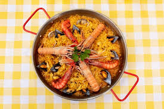

Valencian Paella

Description
Valencian Paella is the most emblematic dish from the Valencia region of Spain.
This traditional recipe combines bomba rice with chicken, rabbit garrofon beans, green beans, and saffron,
creating an aromatic and flavorful dish that represents the essennce of Mediterranean cuisine.
Its preparation in a paellera gives the characteristic socarat that everyone seeks.
Ingredients
- 400g bomba rice
- 1 chicken, cut into pieces
- 300g rabbit, cut into pieces
- 200g garrofon beans (lima beans)
- 100g grated tomato
- 1 red bell pepper
- 1 liter chicken broth
- A pinch of saffron
- 4 garlic cloves
- Extra virgin olive oil
- Salt to taste
- Fresh rosemary
- Lemon for serving
Steps
- Heat olive oil in the paellera and saute the chicken and rabbit until golden brown on all sides
- Add the green beans and garrofon beans, saute for 3 minutes
- Add the grated tomato and red pepper cut into strips, cook for 2 more minutes
- Add the minced garlick and cook until fragrant
- Pour in the rice and sitr well so it absorbs all the flavors
- Add the hot broth with the previously dissolved saffron
- Season with salt and a few sprigs of rosemary
- Cook on high heat for the first 5 minutes, then reduce heat and cook for 15 more minutes without stirring
- Increase heat for the last 2 minutes to achieve the socarrat
- Let it rest for 5 minutes before serving with lemon wedges